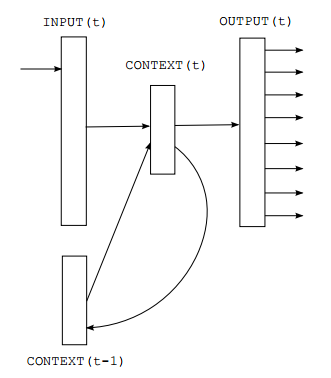

What can RNNs do
RNNs have shown great success in many NLP tasks. At this point I should mention that the most commonly used type of RNNs are LSTMs, which are much better at capturing long-term dependencies than vanilla RNNs are. But don’t worry, LSTMs are essentially the same thing as the RNN we will develop in this tutorial, they’re just a bit more complicated.
1.LANGUAGE MODELING AND GENERATING TEXT
It is very nature to implement RNN as a language model since language can be seen as the sequence data. Given a sequence of words we want to predict the probability of each word given the previous words. Language Models allow us to measure how likely a sentence is, which is an important input for Machine Translation since high-probability sentences are typically correct. A side-effect of being able to predict the next word is that we get a generative model, which allows us to generate new text by sampling from the output probabilities. And depending on what our training data is we can generate all kinds of stuff. In Language Modeling our input is typically a sequence of words (encoded as one-hot vectors for example), and our output is the sequence of predicted words. When training the network we set (O is the output and X is the input at step t) since we want the output at step t to be the actual next word.

RNN based language model
Research papers about Language Modeling and Generating Text:
- Recurrent neural network based language model
- Extensions of Recurrent neural network based language model
- Generating Text with Recurrent Neural Networks
2.MACHINE TRANSLATION
Machine Translation is similar to language modeling in that our input is a sequence of words in our source language (e.g. German). We want to output a sequence of words in our target language (e.g. English). A key difference is that our output only starts after we have seen the complete input, because the first word of our translated sentences may require information captured from the complete input sequence.
RNN for Machine Translation
Research papers about Machine Translation:
- A Recursive Recurrent Neural Network for Statistical Machine Translation
- Sequence to Sequence Learning with Neural Networks
- Joint Language and Translation Modeling with Recurrent Neural Networks
3.SPEECH RECOGNITION
 Speech Recognition with Recurrent Neural Networks
Speech Recognition with Recurrent Neural Networks
Given an input sequence of acoustic signals from a sound wave, we can predict a sequence of phonetic segments together with their probabilities.
Research papers about Speech Recognition:
- Towards End-to-End Speech Recognition with Recurrent Neural Networks
4.GENERATING IMAGE DESCRIPTIONS
Together with convolutional Neural Networks, RNNs have been used as part of a model to generate descriptions for unlabeled images. It’s quite amazing how well this seems to work. The combined model even aligns the generated words with features found in the images.

Deep Visual-Semantic Alignments for Generating Image Descriptions.